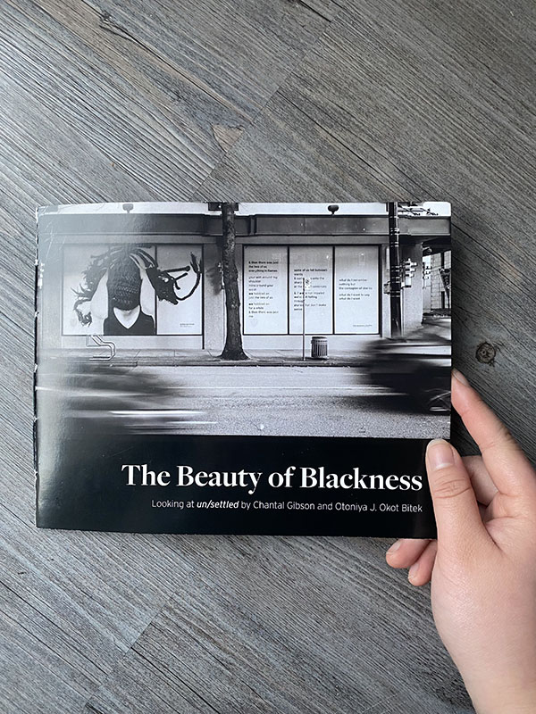
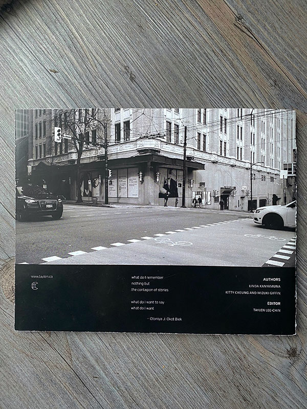
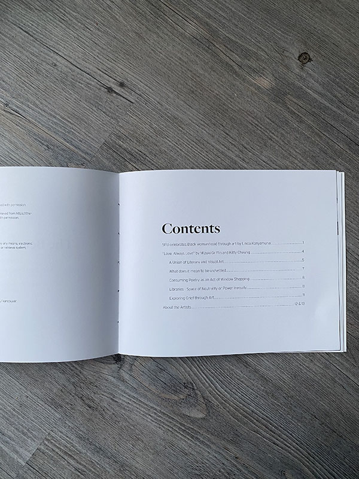
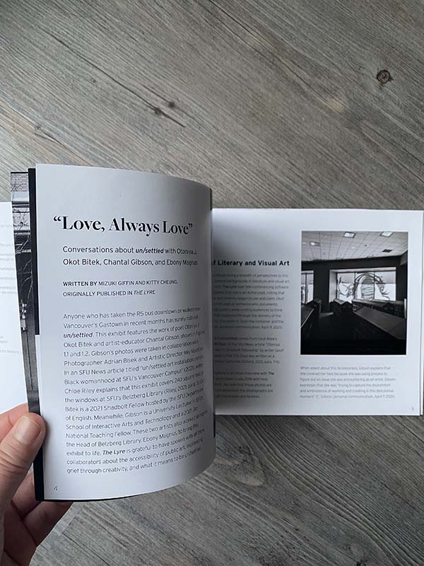
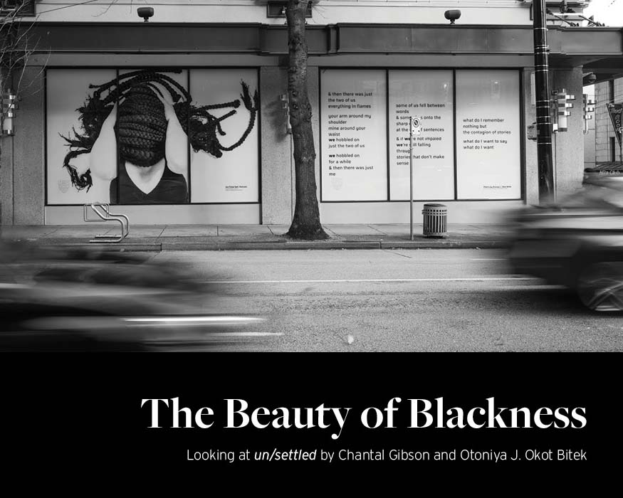
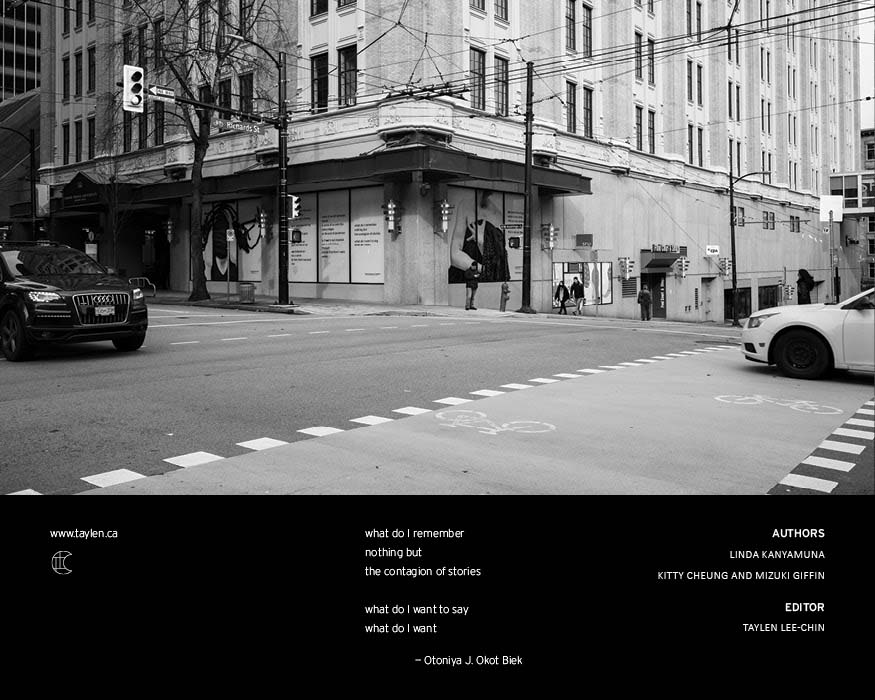
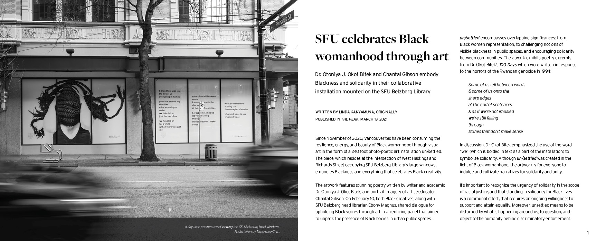
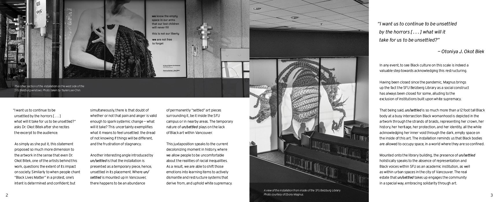

Date
Fall 2021
Role
Graphic Design
Layout Design
Typography
Tools
InDesign
The Beauty of Blackness is an historical art installation book created as a final project for a graphic design class. The goal of the project was to conceptualize and design a print illustrated book to be an interpretation of and be based on the art installation un/settled by Chantal Gibson and Otoniya J. Okot Bitek, which was displayed at the Belzberg Library of the SFU Vancouver Campus.
The purpose of the publication is to inform readers of art installations now created in history that discuss about themes of blackness, culture, and identity. The book contains articles from the SFU school newspaper, The Peak, and the SFU literature journal, The Lyre (Vol. 12 - "Love, Always Love"), that discusses about the installation and showcase points that the creators of the art pieces have mentioned about their works.
The physical book itself measures out to 8.5"x7" inches, contains 20 pages of content and is printed in black and white.
Some images in this project are used with courtesy of Ebony Magnus.




The physical bounded copy of the printed publication.


The digital front and back cover of the book.


Interior pages of The Beauty of Blackness book that showcases the article from The Peak.